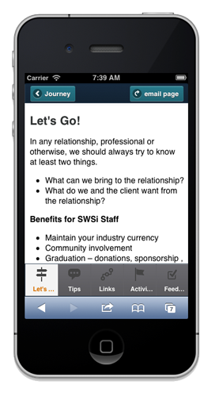
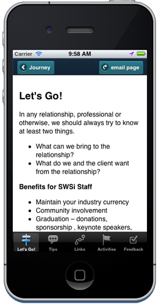
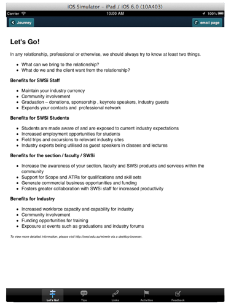

Developing native Apps using HTML5 and PhoneGap


What I'll be talking about
- Different types of Apps
- Introduction to SWSi Win Win Project
- Advantages of PhoneGap
- Disadvantages of PhoneGap
- Demo
Different types of Apps
Native Apps
- Designed for specific platform with the platform SDK
- Designed to work with the hardware
Different types of Apps
Web / Mobile Apps
- Browser based
- Not OS dependant
- Combines Web based technologies (HTML5, CSS & Javascript)
- Can include Server Side Scripting
Different types of Apps
Hybrid Apps
- Combines Web based technologies (HTML5, CSS & Javascript)
- Run inside a container and use the device's browser engine
- A layer allows access to devices capabilites like camera, accelerometer etc (native APIs)
Introduction to SWSi Win Win Project
I was asked to be involved in a pilot project to create a simple CMS that would a repository for content that may be accessible from a mobile (read Apple).
With not having a lot of Objective-C experience, I looked to PhoneGap as a solution.
Introduction to SWSi Win Win Project
Introduction to SWSi Win Win Project
Using HTML5 / CSS5 / JQueryMobile the App was built for:
Introduction to SWSi Win Win Project
Mobile
Introduction to SWSi Win Win Project
iPhone
Introduction to SWSi Win Win Project
iPad
So what is PhoneGap?
PhoneGap is an open source framework for quickly building cross-platform mobile apps using HTML5, Javascript and CSS.

Advantages of PhoneGap
- Improved development time
- Single Codebase
- Small learning curve for web developers improving rapid deployment of apps
- Access to most native device capabilities
- Large community base and growing
- Approved by Apple!
Disadvantages of PhoneGap
- Can be slower than native code
- Limited to Javascript for UI features
- Won't always support new device features
DEMO
Demo
I have a simple HTML5, CSS3 and JqueryMobile page that returns a feed from Twitter based on a search term.
From a Mobile device, visit
http://www.juliandavis.com/JQMTwitter
to view the site from a mobile browser.
Demo
Using the same files downloaded in the previous slide, and only adding the following PhoneGap Javscript:
<script type="text/javascript" src="cordova-2.1.0.js"></script>
<script type="text/javascript" src="js/index.js"></script>
<script type="text/javascript">
app.initialize();
</script>
<thank you/>
CSS Slide Show is called Reveal.js
A massive thanks to Adam Ahmed for assistance with getting the Node Multiplex running!